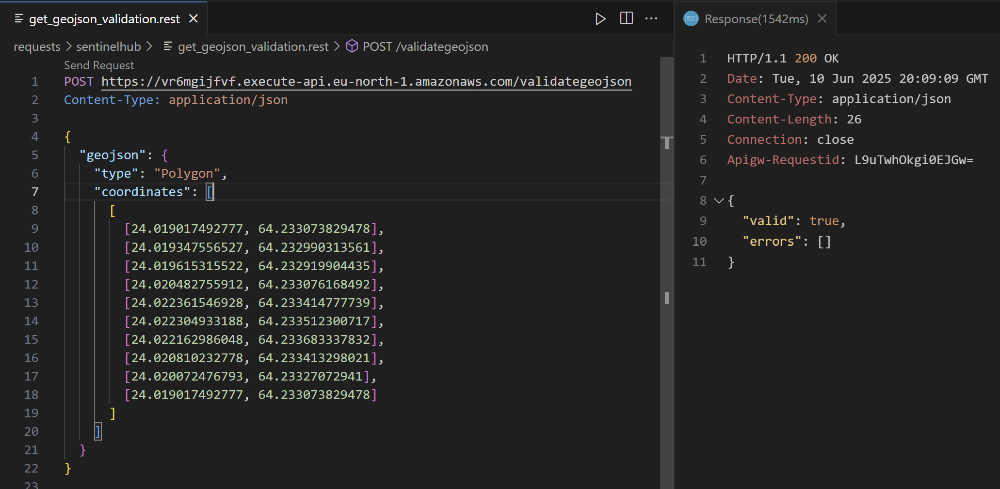
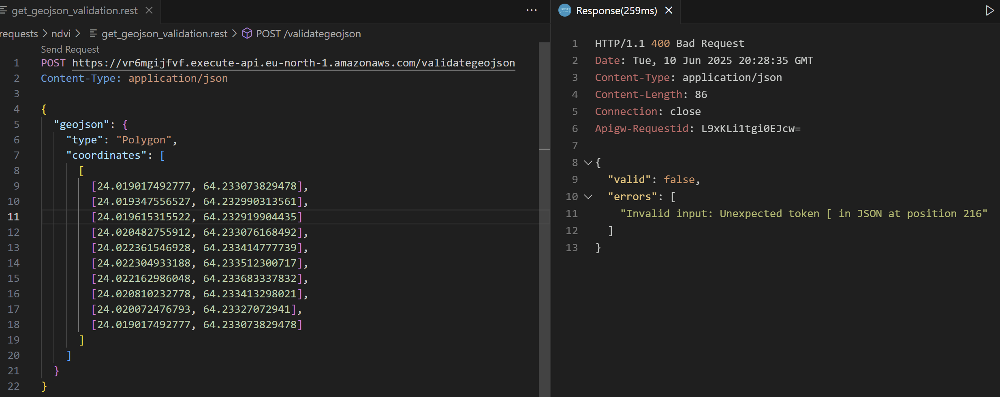

pitääkä lisätä testeihin myös mutta tarttee clientin koodin kautta jotenkin sorvata pitäisköhän rewind laitaa myös serverille ja regex myös no JAA no silloin voiis rest-testin tehdä MUUTA löambdojen paluu arvot käyttämään headers ja bodyäöa tsekkaa onko harjoituksissa käytetty!!!!
validateGeoJson
Returns knowledge if given geoJson is valid or not.
NDVI/
└── lambda/
└── validateGeojson.js
sequenceDiagram
autonumber
participant Client
participant AWS as AWS: validateGeojson
activate AWS
Note left of AWS: .../validategeojson
Client->>AWS:
alt Validation Successful
AWS-->>Client: 200 validation ok
else Validation Failed
AWS-->>Client: 400 validation error
end
deactivate AWS
Definition for serverless.yml
functions:
validateGeojson:
handler: NDVI/lambda/validateGeojson.handler
events:
- httpApi:
path: /validategeojson
method: post
Endpoint
sls deploy returns endpoint for login
| Endpoint Url | HTTP Method |
|---|---|
| https://vr6mgijfvf.execute-api.eu-north-1.amazonaws.com/validategeojson | POST |
Request
| Name | Type | Description |
|---|---|---|
| geojson | geoJSON | Geometry of Area of Interest in geoJSON format |
Response
| Statuscode | Type | Description |
|---|---|---|
| 200 | number | validation ok |
| 400 | number | validation failed |
If not valid authetication, message "Invalid username or password" is returned.
Testing
requests/
└── ndvi/
└── get_geojson_validation.rest
POST https://vr6mgijfvf.execute-api.eu-north-1.amazonaws.com/validategeojson
Content-Type: application/json
{
"geojson": {
"type": "Polygon",
"coordinates": [
[
[24.019017492777, 64.233073829478],
[24.019347556527, 64.232990313561],
[24.019615315522, 64.232919904435],
[24.020482755912, 64.233076168492],
[24.022361546928, 64.233414777739],
[24.022304933188, 64.233512300717],
[24.022162986048, 64.233683337832],
[24.020810232778, 64.233413298021],
[24.020072476793, 64.23327072941],
[24.019017492777, 64.233073829478]
]
]
}
}
On success 
On failure 